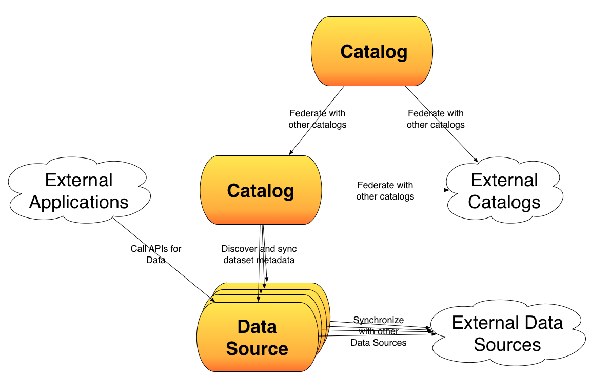

Abstractions
 There are two main abstractions in Open Data Solutions:- Catalogs list datasets, visualizations and APIs. They are generally where people can organize, search and browse these items.
- Data Stores exist to store and serve-up the actual data and metadata around each dataset. They are generally where people can view the contents of a dataset, and sometimes create visualizations and derived datasets from them.
Proposed Catalog Standards
Catalogs need to standardize on the following interactions:
- Protocol and format for exposing their entries.
- Queries over dataset metadata.
- Protocols for finding changes to a catalog
Proposed Data Store Standards
Data Stores need to standardize on the following interactions:
- Queries over dataset contents.
- Protocols for finding changes to a dataset
- Minimum formats for exporting datasets